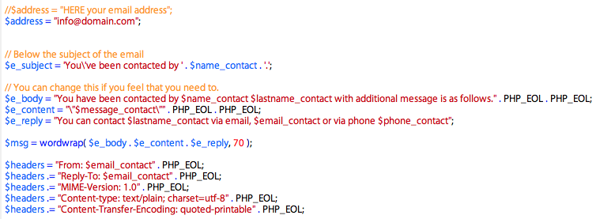
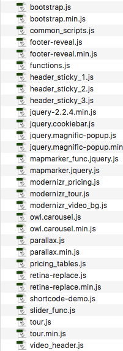

Documentation by “Ansonika” v1.4
“PROMETEO - Business, Financial and Consulting Site Template”
Created: 12 December 2017
Last update: 08 August 2022
By: Ansonika
Thank you for purchasing my theme. If you have any questions that are beyond the scope of this help file, please feel free to post a comment on item page. If you are happy with the theme, please TAKE A MOMENT TO RATE IT from your DOWNLOADS PAGE. Thanks so much!
Table of Contents
- HTML Structure
- CSS Files, Structure and basic modifications
- PHP contact form, quotation and quotation wizard
- JavaScript
- Sources and Credit
- UPDATES
A) HTML Structure - top
This theme has a fixed centered layout 1170px. It's based on Boostrap framework grid. It's ULTRA RESPONSIVE!!.
B) CSS Files Structure and basic modfication - top
The css files are inside the css folder (minified versions included) .To modify colors, typografy, button style ecc....find the realtive comment line in style.css. Below how the file is organized:
1. SITE STRUCTURE and TYPOGRAPHY
- 1.1 Typography
- 1.2 Buttons
- 1.3 Structure
- 1.4 Main navigation
2. CONTENT
- 2.1 Home all versions
- 2.2 About
- 2.3 Services
- 2.4 Service single
- 2.5 Tips/Faq
- 2.6 Contact page
3. COMMON
- 3.1 Preloader
- 3.2 Wrappers background colors
- 3.3 Forms
- 3.4 Accordion
- 3.5 Spacing
- 3.6 Owl carousel
- 3.7 List
- 3.8 Search modal
- 3.9 Position breadcrumbs
- 3.10 Pagination
- 3.11 Newsletter footer
Change the logo
To change the logo, simply use your PNG24 file. Below how is coded. As you can see there are 2 logo codes: one with h1 (for homepages) and the other one a simple image. We suggest to use an height logo size aprox of 50px.
LOGO WITH H1
<div id="logo_home">
<h1><a href="index.html" title="Prometeo">Prometeo - Business, Financial and Consulting Site Template</a></h1>
</div>
LOGO NORMAL <div id="logo">
<a href="index.html" title="Prometeo" >
<img src="img/logo.png" width="190" height="48" alt="Prometeo" data-retina="true">
</a>
</div>
REMEMBER to create the retina version that have double size of the orginal dimension and name it with _2x
(in this case for example width:380px height:96px logo_2x.png).
Home with video header (fallback with a background image in tablets and mobile)
1)Save you mp4 and ogv video in the video folder.The name of the files must match the datasource tag:
Example
data-teaser-source="video/intro" (folder/name_files)=
intro.mp4
intro.ogv
2) To change the fallback background image open css/style.css an find this class in the "responsive section"
#hero_video{ background: #333 url(../img/sub_header_home.jpg); background-size:cover; background-position: center bottom;} 3) Youtube video version: just simply add your video id here data-video-src="cGAKXyqYej0"
LAYERSLIDER
Please refer this DOCUMENTATION
Change the address of Google map in contact page: open mapmarker_func.js and change with your latitude and longitude + your full address. You can change also your map marker (that has to be png24); you can use also the psd provided in the psd folder.
//set up markersCOMMON ISSUE ON GOOGLE MAP (if the Google map works locally but does not works once the site will be online)
var myMarkers = {"markers": [
{"latitude": "51.511732", "longitude":"-0.123270", "icon": "img/map-marker2.png"}
]
};
//set up map options
$("#map").mapmarker({
zoom : 14,
center : 'Covent Garden London', //YOUR FULL ADDRESS
markers : myMarkers
});
In some cases Google requires an api key for the Google map.
You can create your own "Standard api key" here
by clicking on "GET KEY" BUTTON (on Authentication for the standard API—API keys section),
and follow the steps. https://developers.google.com/maps/documentation/javascript/get-api-key#key Here some additionale info on how to create an API KEY http://thegrue.org/google-map-javascript-api-key/
Then replace at the bottom of every page that use Google map, this line
<script src="http://maps.googleapis.com/maps/api/js"></script> OR <script type="text/javascript" src="http://maps.googleapis.com/maps/api/js?sensor=false"></script>
with your api key included, like the example below
<script src="http://maps.googleapis.com/maps/api/js?key=YOUR_API_KEY"></script> NOTE: if you apply the api key, the map does not load on your local computer.
you should upload your site to view it.
THE GRID
Please refer to this documentation Boostrap
Set up site launch page located in site_launch folder
Open functions.js and find this line of code:
SET THE DATE
Open coming_soon/js/functions.js and find this line.
var target = new Date("July 15 2014 13:30:00 GMT+0100"); //replace with YOUR DATE SET NEWSLETTER EMAIL
Open coming_soon/assets/newsletter.php and find this commented code.
//$address = "your email address";
$address = "test@domain.com";
C) PHP files: Contact form, quick contact, newsltetter, etc - top
Below the script for the contact form, you can set the error messages in the validate.js. The logic is similar to the other php forms used in the item.
If you doesn't recieve the email please first check:
1) Your spam folder
2) If you hosting requires special settings
3) If your email has to be managed from the same hosting provider
4) Set the permission of the asset folder on your host to 755 your FTP client
5) This script does not support SMTP authentication. Contact me.
D) JavaScript - top
This theme use These Javascript (minified versions included). i've included the common theme scripts in a single file for a fast edit and load.
common_scripts.js content:
- Boostrap.js
- Search.js
- Footer Reveal effect
- Headroom.js - Fixed header effect
- Magnifc-popup.js
- Retina-replace.js
- Owl carousel
Below a full list of js used.

E) Sources and Credits - top
I've used the following images, icons or other files as listed.
- Twitter Bootstrap
- Fontello
- Elegant Icon font
- Magnific popup
- Retina replace
- Jquery
- Owl carousel
- Modernizr
- Footer reveal
- Sticky header effect
Images are not included.
E) Updates - top
V.1.4 (8 August 2022).
- Removed "get_magic_quotes_gpc" php function deprecated for latest PHP versions
How to update from previous version:
Removed "get_magic_quotes_gpc" php function deprecated for latest PHP versions
Update the following files: assets/contact.php or delete the following lines of code
if(get_magic_quotes_gpc()) {
$message_contact = stripslashes($message_contact);
}
V.1.3 (18 February 2021).
- Updated Documentation
V.1.2 (18 December 2018).
- Removed @import
How to update from previous version: In the head of every page add the google font directly in the page (and delete the @import in style.css): <!-- GOOGLE WEB FONT-->
<link href="https://fonts.googleapis.com/css?family=Roboto+Condensed:300,300,400,700" rel="stylesheet">
Version 1.1 29 January 2018
- Fixed Modal demo in shortcodes.html page

Once again, thank you so much for purchasing this theme. Please take a moment to rate it from your Downloads page.
Need support?
For support contact me using the form on my profile page with subject [ThemeForest Support] Template name, or via the Support Tab on the item page. You will receive an answer within 24-48 hours (working days) GMT +1.- I only provide support for fixing bugs or small issues on my items.
- I don't provide free support for additional custom modifications to the items.
- Please provide your site link, screenshots and other information about your issue.
- Read ENVATO support terms
Need customization or availability for freelance projects?
Just send an email via profile page form; please don't forget to specify:- if you are a company, agency or private user
- all the information about your projects, needs, site urls, project sheet, etc..
- from which country you are
- if you have a deadline
- if you have basic knowledge of HTML , CSS, JS, PHP
Ansonika